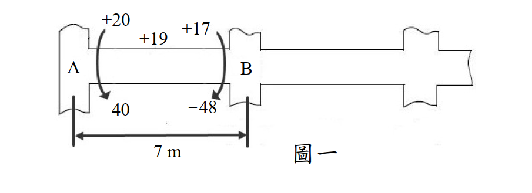

考題編號：SD-2013-2
主分類： SD-U3-1 結構耐震設計（含RC結構與鋼結構）
副分類： SD-U2-2 建築耐震設計規範
分析方法： 耐震梁設計（彎矩鋼筋 + 容量設計法剪力箍筋）
標籤： RC耐震設計 特殊抗彎矩構架 梁彎矩鋼筋 正鋼筋比例要求 容量設計法 剪力設計 Vc=0 Mpr 推算剪力 耐震箍筋間距 塑鉸區 約束箍筋
1. 原始題目重述 (Problem Restatement)
AB 大梁設計資料（來自地震反應分析）：
| 位置 | +M（Tf-m） | −M（Tf-m） |
|---|---|---|
| A 端 | +20 | −40 |
| 跨中 | +19 | — |
| B 端 | +17 | −48 |
載重與幾何：
- 跨長 L = 7 m（中心至中心）
- 均勻靜載重 WD = 2.7 Tf/m，活載重 WL = 1.4 Tf/m
- 梁：b = 40 cm，h = 60 cm，d = 53 cm，d' = 7 cm
- 柱：b = 60 cm，h = 60 cm（方柱）
- 材料：fc' = 280 kgf/cm²，fy = 4200 kgf/cm²

圖說：AB 梁彎矩包絡圖。A端最大負彎矩 40 Tf-m（地震 A 端控制），最大正彎矩 20 Tf-m；B端最大負彎矩 48 Tf-m，最大正彎矩 17 Tf-m；跨中最大正彎矩 19 Tf-m。梁尺寸 40×60cm，d=53cm，柱 60×60cm。
題(一)（10分）： 設計此大梁之正、負彎矩鋼筋。 題(二)（10分）： 設計此大梁之剪力箍筋。
2. 考題核心精神與出題者意圖 (Core Concepts & Examiner's Intent)
核心觀念：
- 這是一道 RC 特殊抗彎矩構架（SMRF）梁的完整耐震設計題
- 題(一)重點：計算 As 後，必須套用耐震規定（正筋 ≥ 50% 負筋）
- 題(二)重點：必須用容量設計法（Capacity Design）推算剪力，而非單純使用分析剪力
出題者意圖： 測驗考生是否理解「耐震設計」和「一般設計」的差異——尤其是正鋼筋比例要求（防止單向失效）和容量設計剪力（以破壞機制推算極限剪力）。
3. 解題戰略地圖與陷阱分析 (Strategic Roadmap & Trap Analysis)
主要陷阱：
-
正鋼筋未考慮耐震 50% 規定：B端正鋼筋由分析彎矩算出 8.82 cm²，但耐震規定要求 ≥ 0.5×27.0 = 13.5 cm²，兩者差距巨大。
-
剪力設計未用容量設計法：直接用分析剪力設計箍筋是錯誤的；必須用 Mpr（probable moment strength）推算最大可能剪力。
-
Vc 的取值：當地震誘發剪力 Ve ≥ 0.5×Vu 時，Vc = 0——此情況在耐震梁中很常見，需要全靠箍筋承擔剪力。
-
塑鉸區間距加密：耐震規定在距支承面 2h 範圍內必須加密箍筋，間距 ≤ min(d/4, 8×主筋徑, 24×箍筋徑, 30 cm)。
3.5 變數層次分析 (Variable Hierarchy Analysis)
最終目標
題(一)： 各控制截面的 As（cm²），並確認耐震正鋼筋比例要求 題(二)： 箍筋間距 s（cm），分別針對塑鉸區與跨中區
本題關鍵公式
$$R_n = \frac{M_u}{\phi b d^2} \quad \Rightarrow \quad \rho = \frac{0.85 f_c'}{f_y}\left[1 - \sqrt{1 - \frac{2R_n}{0.85f_c'}}\right] \quad \Rightarrow \quad A_s = \rho \cdot b \cdot d$$
$$A_{s,+} \geq \frac{1}{2} A_{s,-} \quad \text{（耐震正鋼筋規定）}$$
$$M_{pr} = A_s \cdot 1.25 f_y \cdot \left(d - \frac{a'}{2}\right), \quad a' = \frac{A_s \cdot 1.25 f_y}{0.85 f_c' b}$$
$$V_e = \frac{M_{pr,A} + M_{pr,B}}{L_n} \quad \Rightarrow \quad V_u = V_e + \frac{w_u L_n}{2}$$
$$\text{若 } \frac{V_e}{V_u} \geq 0.5 \Rightarrow V_c = 0 \quad \Rightarrow \quad s \leq \frac{\phi A_v f_y d}{V_u}$$
L1：題目直接給定
| 符號 | 數值 | 說明 |
|---|---|---|
| b | 40 cm | 梁寬 |
| h | 60 cm | 梁高 |
| d | 53 cm | 有效深度 |
| d' | 7 cm | 壓力鋼筋保護層 |
| fc' | 280 kgf/cm² | 混凝土強度 |
| fy | 4200 kgf/cm² | 鋼筋降伏強度 |
| L | 7 m | 中心跨長 |
| WD | 2.7 Tf/m | 靜載重 |
| WL | 1.4 Tf/m | 活載重 |
| φ_flexure | 0.9 | 彎矩折減係數 |
| φ_shear | 0.75 | 剪力折減係數 |
L2：需計算的中間值
| 符號 | 公式 | 卡關? |
|---|---|---|
| β₁ | 0.85（fc' = 280 kgf/cm²） | |
| As,min | max(14/fy, 0.8√fc'/fy)×b×d = 7.07 cm² | |
| As,max（耐震） | 0.025×b×d = 53 cm² | |
| Ln | L - h_col = 700 - 60 = 640 cm | |
| wu | 1.2WD + 1.0WL = 4.64 Tf/m | |
| 0.85fc'b | 0.85×280×40 = 9,520 kgf/cm |
4. 步驟化詳細計算過程
題(一)（10分）：彎矩鋼筋設計
設計方法（疊代法）：
$$A_s = \frac{M_u}{\phi f_y (d - a/2)}, \quad a = \frac{A_s f_y}{0.85 f_c' b} = \frac{A_s \times 4200}{9520}$$
Step 1：最小鋼筋量
$$A_{s,\min} = \max\!\left(\frac{14}{f_y},\; \frac{0.8\sqrt{f_c'}}{f_y}\right) \times b \times d$$
$$= \max\!\left(\frac{14}{4200},\; \frac{0.8 \times 16.73}{4200}\right) \times 40 \times 53 = \max(0.00333,\; 0.00319) \times 2120$$
$$\boxed{A_{s,\min} = 7.07 \text{ cm}^2}$$
Step 2：A端 負彎矩（Mu = 40 Tf-m = 4,000,000 kgf-cm）
試 a₁ = 10 cm： $$A_s = \frac{4{,}000{,}000}{0.9 \times 4200 \times (53 - 5)} = \frac{4{,}000{,}000}{181{,}440} = 22.05 \text{ cm}^2$$ $$a = \frac{22.05 \times 4200}{9520} = 9.73 \text{ cm}$$
疊代 a₂ = 9.73 cm： $$A_s = \frac{4{,}000{,}000}{0.9 \times 4200 \times (53 - 4.87)} = \frac{4{,}000{,}000}{181{,}927} = 21.98 \text{ cm}^2$$ $$a = \frac{21.98 \times 4200}{9520} = 9.70 \text{ cm} \approx 9.73 \text{ cm} \quad \checkmark$$
$$\boxed{A_{s,A-} = 21.98 \text{ cm}^2}$$
驗證 ε_t（確保拉力控制，φ = 0.9）： $$c = a/\beta_1 = 9.70/0.85 = 11.41 \text{ cm}, \quad \varepsilon_t = 0.003 \times \frac{53 - 11.41}{11.41} = 0.0109 > 0.005 \; \checkmark$$
Step 3：B端 負彎矩（Mu = 48 Tf-m = 4,800,000 kgf-cm）
試 a₁ = 12 cm： $$A_s = \frac{4{,}800{,}000}{0.9 \times 4200 \times (53 - 6)} = \frac{4{,}800{,}000}{177{,}660} = 27.02 \text{ cm}^2$$ $$a = \frac{27.02 \times 4200}{9520} = 11.92 \text{ cm}$$
疊代 a₂ = 11.92 cm： $$A_s = \frac{4{,}800{,}000}{0.9 \times 4200 \times (53 - 5.96)} = \frac{4{,}800{,}000}{177{,}811} = 26.99 \text{ cm}^2$$ $$a = 11.91 \text{ cm} \approx 11.92 \; \checkmark$$
$$\boxed{A_{s,B-} = 27.0 \text{ cm}^2}$$
Step 4：跨中 正彎矩（Mu = 19 Tf-m = 1,900,000 kgf-cm）
$$A_s \approx \frac{1{,}900{,}000}{0.9 \times 4200 \times (53 - 2.2)} = \frac{1{,}900{,}000}{191{,}800} = 9.90 \text{ cm}^2 \quad \checkmark$$
$$\boxed{A_{s,\text{mid}+} = 9.90 \text{ cm}^2}$$
Step 5：A端 正彎矩（Mu = 20 Tf-m = 2,000,000 kgf-cm）
$$A_s \approx \frac{2{,}000{,}000}{0.9 \times 4200 \times (53 - 2.3)} = \frac{2{,}000{,}000}{191{,}600} = 10.44 \text{ cm}^2$$
耐震正鋼筋規定（特殊抗彎矩框架梁）： $$A_{s,A+} \geq \frac{1}{2} A_{s,A-} = \frac{1}{2} \times 21.98 = 10.99 \text{ cm}^2$$
由分析需求 10.44 < 10.99 → 由耐震規定控制
$$\boxed{A_{s,A+} = 10.99 \text{ cm}^2}$$
Step 6：B端 正彎矩（Mu = 17 Tf-m = 1,700,000 kgf-cm）
$$A_s \approx \frac{1{,}700{,}000}{0.9 \times 4200 \times (53 - 1.9)} = \frac{1{,}700{,}000}{193{,}100} = 8.81 \text{ cm}^2$$
耐震正鋼筋規定： $$A_{s,B+} \geq \frac{1}{2} A_{s,B-} = \frac{1}{2} \times 27.0 = 13.5 \text{ cm}^2$$
由分析需求 8.81 << 13.5 → 由耐震規定強烈控制
$$\boxed{A_{s,B+} = 13.5 \text{ cm}^2}$$
彎矩鋼筋設計匯總
| 位置 | 方向 | Mu (Tf-m) | As,計算 (cm²) | As,耐震規定 (cm²) | As,設計 (cm²) |
|---|---|---|---|---|---|
| A端 | 負筋（頂部） | 40 | 21.98 | — | 21.98 |
| A端 | 正筋（底部） | 20 | 10.44 | ≥10.99 | 10.99 |
| 跨中 | 正筋（底部） | 19 | 9.90 | ≥7.07 (Asmin) | 9.90 |
| B端 | 正筋（底部） | 17 | 8.81 | ≥13.50 | 13.50 |
| B端 | 負筋（頂部） | 48 | 27.0 | — | 27.0 |
驗核：各截面 As > As_min = 7.07 cm²✓；各截面 ρ < 0.025（As_max = 53 cm²）✓
題(二)（10分）：剪力箍筋設計
Step 1：計算可能彎矩強度（Mpr，1.25fy，φ=1.0）
設計剪力採容量設計法，以構材極限彎矩強度（Mpr）推算最大可能剪力，防止剪力脆性破壞發生在彎矩降伏之前。
$$M_{pr} = A_s \cdot 1.25 f_y \cdot \left(d - \frac{a'}{2}\right), \quad a' = \frac{1.25 A_s f_y}{0.85 f_c' b} = \frac{1.25 A_s \times 4200}{9520}$$
| 截面 | As (cm²) | a' (cm) | Mpr (Tf-m) |
|---|---|---|---|
| A端 負（頂部受拉） | 21.98 | 12.12 | $21.98 \times 5250 \times (53-6.06) / 10^5 =$ 54.17 |
| A端 正（底部受拉） | 10.99 | 6.06 | $10.99 \times 5250 \times (53-3.03) / 10^5 =$ 28.83 |
| B端 負（頂部受拉） | 27.0 | 14.89 | $27.0 \times 5250 \times (53-7.45) / 10^5 =$ 64.57 |
| B端 正（底部受拉） | 13.5 | 7.45 | $13.5 \times 5250 \times (53-3.72) / 10^5 =$ 34.93 |
計算說明（以 B端負為例）： $a' = 27.0 \times 1.25 \times 4200 / 9520 = 14.89 \text{ cm}$ $M_{pr,B-} = 27.0 \times 5250 \times (53 - 7.445) / 100{,}000 = 64.57 \text{ Tf-m}$
Step 2：推算設計剪力 Vu（容量設計法）
淨跨度： $$L_n = 700 - 60 = 640 \text{ cm} = 6.40 \text{ m}$$
地震誘發剪力（兩種地震方向）：
地震方向1（向右搖擺：A端負、B端正）： $$V_{e,1} = \frac{M_{pr,A-} + M_{pr,B+}}{L_n} = \frac{54.17 + 34.93}{6.40} = \frac{89.10}{6.40} = 13.92 \text{ Tf}$$
地震方向2（向左搖擺：A端正、B端負）： $$V_{e,2} = \frac{M_{pr,A+} + M_{pr,B-}}{L_n} = \frac{28.83 + 64.57}{6.40} = \frac{93.40}{6.40} = 14.59 \text{ Tf} \quad \leftarrow \text{控制}$$
重力荷載剪力： $$w_u = 1.2 W_D + 1.0 W_L = 1.2 \times 2.7 + 1.0 \times 1.4 = 4.64 \text{ Tf/m}$$ $$V_g = \frac{w_u L_n}{2} = \frac{4.64 \times 6.40}{2} = 14.85 \text{ Tf}$$
最大設計剪力（於支承面）： $$V_u = V_{e,2} + V_g = 14.59 + 14.85 = 29.44 \text{ Tf（於 B 端面控制）}$$
臨界截面（距支承面 d = 53 cm）之設計剪力： $$V_u = 29.44 - w_u \times d = 29.44 - 4.64 \times 0.53 = 29.44 - 2.46 = \mathbf{26.98 \text{ Tf}}$$
Step 3：判斷 Vc 是否為零
$$\frac{V_e}{V_u} = \frac{14.59}{26.98} = 0.541 > 0.5$$
→ 依耐震規範：$V_c = 0$（地震誘發剪力占設計剪力超過 50%）
全部剪力由箍筋承擔。
Step 4：設計箍筋
使用 D13 兩肢箍（2-leg D13）： $$A_v = 2 \times 1.267 = 2.534 \text{ cm}^2$$
需要箍筋間距（由剪力控制）： $$\phi V_s = \phi \cdot \frac{A_v f_y d}{s} \geq V_u$$ $$s \leq \frac{\phi A_v f_y d}{V_u} = \frac{0.75 \times 2.534 \times 4200 \times 53}{26{,}980} = \frac{422{,}676}{26{,}980} = 15.7 \text{ cm}$$
Step 5：耐震箍筋間距規定
塑鉸區（seismic hoop zone）範圍： 距支承面 $2h = 2 \times 60 = 120 \text{ cm}$
塑鉸區最大間距（取最小值）： $$s_{\max} = \min\!\left(\frac{d}{4},\; 8 d_{b,\text{long}},\; 24 d_{b,\text{hoop}},\; 30 \text{ cm}\right)$$
假設主筋採用 D25（$d_b = 25 \text{ mm}$）： $$s_{\max} = \min\!\left(\frac{53}{4},\; 8 \times 2.5,\; 24 \times 1.3,\; 30\right) = \min(13.25,\; 20,\; 31.2,\; 30) = 13.25 \text{ cm}$$
由剪力需求 s ≤ 15.7 cm，但耐震間距 ≤ 13.25 cm → 塑鉸區耐震間距控制
$$\boxed{s_{\text{plastic hinge}} = 13 \text{ cm}}$$
驗核： $$\phi V_s = 0.75 \times \frac{2.534 \times 4200 \times 53}{13} = 0.75 \times \frac{563{,}562}{13} = 0.75 \times 43{,}351 = 32{,}513 \text{ kgf} = 32.5 \text{ Tf} > 26.98 \text{ Tf} \; \checkmark$$
Step 6：跨中區箍筋
跨中（距支承面 >120 cm 區域）：
跨中的設計剪力（地震剪力為主，重力剪力趨近於零）： $$V_{u,\text{mid}} = V_e = 14.59 \text{ Tf} = 14{,}590 \text{ kgf}$$
$$s \leq \frac{\phi A_v f_y d}{V_u} = \frac{0.75 \times 2.534 \times 4200 \times 53}{14{,}590} = \frac{422{,}676}{14{,}590} = 28.97 \text{ cm}$$
耐震跨中最大間距： $$s_{\max} = \min\!\left(\frac{d}{2},\; 30 \text{ cm}\right) = \min(26.5,\; 30) = 26.5 \text{ cm}$$
$$\boxed{s_{\text{middle}} = 26 \text{ cm}}$$
剪力箍筋設計匯總
| 區域 | 範圍（距支承面） | 設計剪力 (Tf) | 箍筋規格 | 間距 |
|---|---|---|---|---|
| 塑鉸區（兩端） | 0 ~ 120 cm | 26.98 | D13 兩肢箍 | @13 cm |
| 跨中區 | 120 ~ (Ln-120) cm | 14.59 | D13 兩肢箍 | @26 cm |
耐震箍筋特別規定：
- 塑鉸區箍筋採封閉式（閉合箍），彎鉤採 135°（或 135° + 直段 ≥ 10db）
- 第一道箍筋距支承面不超過 5 cm
- 塑鉸區箍筋兼具圍束功能（保護核心混凝土）
$$\boxed{\text{塑鉸區 D13 兩肢箍 @13 cm；跨中 D13 兩肢箍 @26 cm；Vc = 0（Ve/Vu = 54\%）}}$$
5. 關鍵爭議點與進階探討 (Critical Issues & Advanced Discussion)
5.1 正鋼筋比例規定的工程意義
耐震規範要求「正鋼筋 ≥ 負鋼筋的 50%」，其理由在於：
- 在地震雙向反覆作用下，梁端支承處可能在某一地震方向下承受正彎矩（底部受拉）
- 若正鋼筋不足，底部可能形成單方向塑鉸，造成結構不對稱失效
- 50% 規定確保兩個方向都有足夠的彎矩韌性
5.2 Vc = 0 的物理意義
當地震誘發剪力占總設計剪力 ≥ 50% 時，構材在反覆載重下混凝土受到往復斜向裂縫的損傷，抗剪能力顯著降低，不能再依賴 Vc（混凝土本身的抗剪能力）。因此全靠鋼筋（箍筋）承受剪力，確保韌性。
5.3 Mpr 中的 1.25 倍係數
1.25 倍係數來自鋼筋在應變硬化（strain hardening）後，實際降伏強度可能超過 fy，典型上限約為 1.25fy。使用 Mpr 是一種保守的容量設計做法：確保在最壞情況（梁達到最大可能強度）下，設計的箍筋仍足夠。
5.4 考場答題建議
- 題(一)：先列 As,min 和最大鋼筋比，再計算各截面 As，最後必須說明並套用耐震 50% 正鋼筋規定
- 題(二)：分三步：① 計算 Mpr → ② 推算 Ve 和 Vu → ③ 判斷 Vc = 0 → ④ 設計箍筋 + 耐震間距
- 容量設計法（Mpr/Ln）是得分關鍵，必須明確說明
6. 附圖清單 (Figure List)
| 檔案 | 內容 | 狀態 |
|---|---|---|
| SD-2013-2-fig-1.png | AB 梁彎矩包絡圖（含數值） | 等待使用者截圖 |
verificationStatus: unverified
verifiedSolution: （待人工驗算後填入）